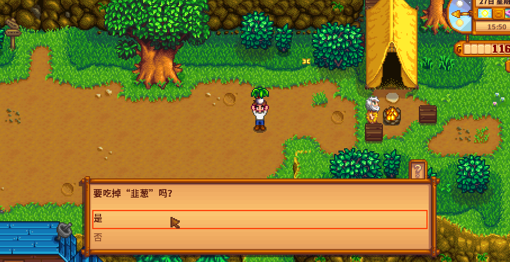
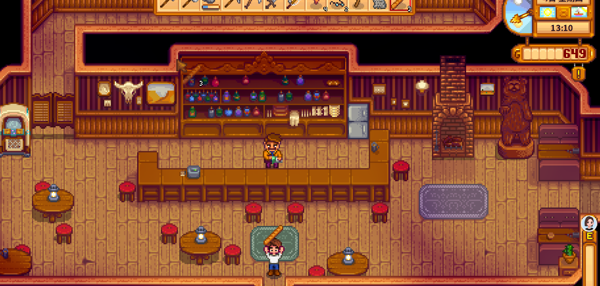
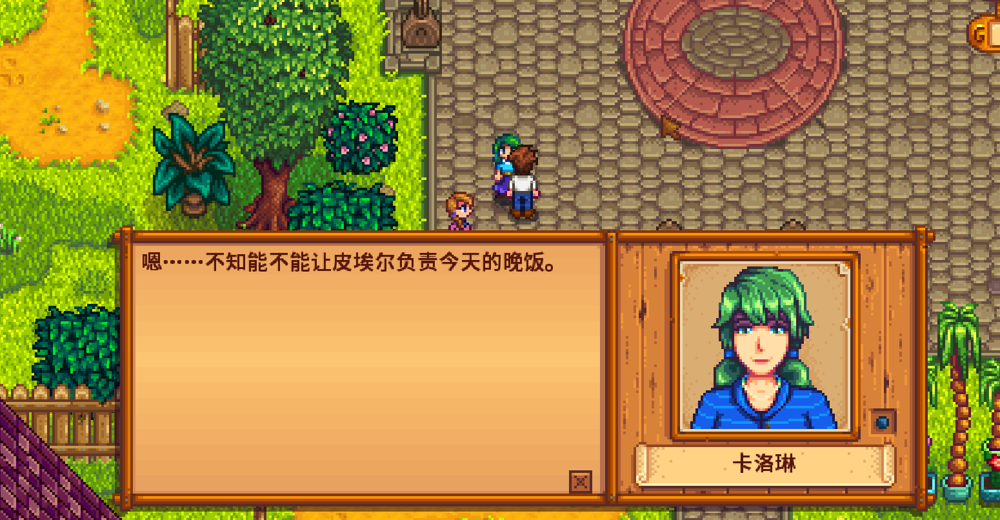

Quick answers (read this first)
- Energy is the green bar. Tools, fishing, and mining spend it; walking spends almost nothing.
- Eat from the toolbar with right-click (confirm Yes). You cannot eat while the inventory menu is open.
- Tools, ore, seeds, and trash are not food. Forage, crops, cooked dishes, and Saloon meals are.
- Exhausted (0 energy) means stop using tools. Walk home and sleep, or buy food first.
- Passing out is survivable—you lose some gold and wake at home—but planning around food feels better.
Who this is for (and who should skip)
Use this if you keep fainting on the beach, cannot figure out how to eat, or empty the bar before watering is done.
Skip or skim if you already run food chests and never hit Exhausted. This page is for early Year 1 habits, not late-game coffee routes.
Version note: Written for modern Stardew Valley (1.6-era QoL). Exact restore amounts can vary by item quality; we teach habits, not a fake spreadsheet of every snack.
From our Year 1 save (real pitfalls): We sold every edible, then stood at 0 energy with copper ore selected. Eat from the hotbar (right-click), or buy Saloon bread after noon—tools and ore never count as food.
Pros & cons of an energy-first day
| Details | |
|---|---|
| Pros | Fewer forced naps; crops stay watered; less gold lost to fainting; fishing practice stays optional. |
| Cons | You will look “slow” compared to challenge runs; Saloon food costs gold you might want for seeds. |
| Use when | First playthrough, or every afternoon ends in Exhausted. |
| Skip when | You already pack food and finish mornings with bar to spare. |
Interactive checklist
Tick as you play. Saved in this browser only.
Safe to skip (anti-FOMO)
- Mastering the fishing minigame on the same day you are already Exhausted.
- Clearing the whole farm in one afternoon.
- Buying beer at the Saloon for “energy”—it is the wrong tool for this problem.
- Hoarding every forage forever while you faint with an empty stomach.
Decision table: what to do when the bar is low
| You see… | Do this | Avoid |
|---|---|---|
| Green bar half-empty, chores done | Short mine trip or light fishing—then home | Starting a second big project |
| Almost empty, food in inventory | Right-click eat, then finish one small task | Ignoring food while swinging tools |
| Exhausted, no food | Walk to Saloon or walk home to sleep | One more cast / one more rock |
| Passed out already | Accept the gold loss; pack food tomorrow | Restarting the whole farm over it |
Real screenshots from our Year 1 save
Captured in-game after we sold every snack and had to buy Saloon bread.

Game screenshot © ConcernedApe — used for guide commentary

Game screenshot © ConcernedApe — used for guide commentary

Game screenshot © ConcernedApe — used for guide commentary
New player warning: Right-click food on the hotbar, not inside the open inventory. Ore, seeds, and tools are not snacks—we clicked copper ore several times before admitting defeat.
How to eat (operations)
- Close the inventory menu (
Esc/ red X). Eating does not work from inside the bag view. - Click an edible item on the bottom toolbar so it has the red select frame.
- Right-click once. If a prompt asks to eat, choose Yes.
- Watch the green bar rise. Eat a second snack only if you still need to finish watering.
- If nothing is edible, go to the Stardrop Saloon (orange roof) after noon, buy bread/salad, then eat the same way.
Common mistakes
- Trying to eat copper ore / seeds / tools. If right-click does nothing useful, it is not food.
- Left-click only. Using an item is not the same as eating it.
- Fishing while Exhausted. The minigame will punish you twice: no fish, then a faint.
- Selling every edible. Keep a couple of forage pieces as emergency snacks.
- Waiting for 2:00am. Sleeping earlier restores the day; standing around does not refill energy.
Alternative variations
- Forage pocket: Always leave one wild snack in slot 8–12. Cheap and renewable.
- Saloon emergency fund: Keep a small gold cushion for Gus when the mines go long.
- Short-session: Water → ship → sleep. Expand hobbies only after mornings feel easy.
FAQ
Why can’t I eat from the inventory screen?
Close the menu first. Select the food on the hotbar, then right-click in the world view.
Is passing out a soft game-over?
No. You wake at home with a gold penalty. Annoying, not a reset.
Bread or salad at the Saloon?
Bread is the cheap stopgap. Salad usually restores more for the price if you can afford it. Skip beer when you only need stamina.
Should I fish to “learn faster” when tired?
Not when Exhausted. Practice on a full bar after chores—or on a rainy day with snacks packed.
Next steps / related pages
Unofficial fan guide. Not affiliated with ConcernedApe.